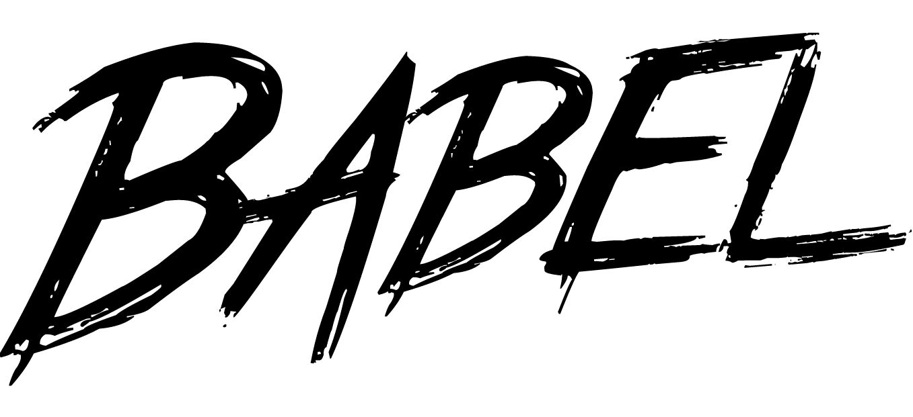

本教程对应的代码包请参见babel-starter-kit。还有为你贴心制作的 Babel Gitbook。
Babel 是一个通用的多用途 JavaScript 编译器（Babel is a JavaScript compiler.）。通过 Babel 你可以使用（并创建）下一代的 JavaScript，以及下一代的 JavaScript 工具。
作为一种语言，JavaScript 在不断发展，新的标准／提案和新的特性层出不穷。 在得到广泛普及之前，Babel 能够让你提前（甚至数年）使用它们。
Babel 把用最新标准编写的 JavaScript 代码向下编译成可以在今天随处可用的版本。 这一过程叫做“源码到源码”编译， 也被称为转换编译（transpiling，是一个自造合成词，即转换＋编译。以下也简称为转译）。
例如，Babel 能够将新的 ES2015 箭头函数语法：
const square = n => n * n;
转译为：
const square = function square(n) {
return n * n;
};
不过 Babel 的用途并不止于此，它支持语法扩展，能支持像 React 所用的 JSX 语法，同时还支持用于静态类型检查的流式语法（Flow Syntax）。
更重要的是，Babel 的一切都是简单的插件，谁都可以创建自己的插件，利用 Babel 的全部威力去做任何事情。
再进一步，Babel 自身被分解成了数个核心模块，任何人都可以利用它们来创建下一代的 JavaScript 工具。
已经有很多人都这样做了，围绕着 Babel 涌现出了非常大规模和多样化的生态系统。 在这本手册中，我将介绍如何使用 Babel 的内建工具以及一些来自于社区的非常有用的东西。
由于 JavaScript 社区没有统一的构建工具、框架、平台等等，因此 Babel 正式集成了对所有主流工具的支持。 从 Gulp 到 Browserify，从 Ember 到 Meteor，不管你的环境设置如何，Babel 都有正式的集成支持。
本手册的目的主要是介绍 Babel 内建方式的安装，不过你可以访问交互式的安装页面来查看其它的整合方式。
注意： 本手册将涉及到一些命令行工具如
node和npm。在继续阅读之前请确保你已经熟悉这些工具了。
Babel 的 CLI 是一种在命令行下使用 Babel 编译文件的简单方法。
让我们先全局安装它来学习基础知识。
$ npm install --global babel-cli
我们可以这样来编译我们的第一个文件：
$ babel my-file.js
这将把编译后的结果直接输出至终端。使用 --out-file 或着 -o 可以将结果写入到指定的文件。.
$ babel example.js --out-file compiled.js
# 或
$ babel example.js -o compiled.js
如果我们想要把一个目录整个编译成一个新的目录，可以使用 --out-dir 或者 -d。.
$ babel src --out-dir lib
# 或
$ babel src -d lib
尽管你可以把 Babel CLI 全局安装在你的机器上，但是按项目安装会更好。
有两个主要的原因。
要在（项目）本地安装 Babel CLI 可以运行：
$ npm install --save-dev babel-cli
注意：由于全局运行 Babel 是一个坏习惯，如果你要卸载全局安装的版本可以运行：
npm uninstall --global babel-cli。.
安装完成后，你的 package.json 应该如下所示：
{
"name": "my-project",
"version": "1.0.0",
"devDependencies": {
"babel-cli": "^6.0.0"
}
}
现在，我们不直接从命令行运行 Babel 了，取而代之我们将把运行命令写在 npm scripts 里，这样可以使用 Babel 的本地版本。
只需将 "scripts" 字段添加到你的 package.json 文件内并且把 babel 命令写成 build 字段。.
{
"name": "my-project",
"version": "1.0.0",
+ "scripts": {
+ "build": "babel src -d lib"
+ },
"devDependencies": {
"babel-cli": "^6.0.0"
}
}
现在可以在终端里运行：
npm run build
这将以与之前同样的方式运行 Babel，但这一次我们使用的是本地副本。
如果你要用 node CLI 来运行代码，那么整合 Babel 最简单的方式就是使用 babel-node CLI，它是 node CLI 的替代品。
但请注意这种方法并不适合正式产品环境使用。 直接部署用此方式编译的代码不是好的做法。 在部署之前预先编译会更好。 不过用在构建脚本或是其他本地运行的脚本中是非常合适的。
首先确保 babel-cli 已经安装了。
$ npm install --save-dev babel-cli
注意：如果你不清楚为什么要安装在本地，请阅读上面在项目内运行 Babel CLI 的部分。
然后用 babel-node 来替代 node 运行所有的代码 。.
如果用 npm scripts 的话只需要这样做：
{
"scripts": {
- "script-name": "node script.js"
+ "script-name": "babel-node script.js"
}
}
要不然的话你需要写全 babel-node 的路径。
- node script.js
+ ./node_modules/.bin/babel-node script.js
提示：你可以使用
npm-run。.
如果你需要以编程的方式来调用Babel的API进行转码，就可以使用 babel-core 这个模块。
我们首先来安装 babel-core。
$ npm install babel-core
var babel = require("babel-core");
字符串形式的 JavaScript 代码可以直接使用 babel.transform 来编译。.
babel.transform("code();", options);
// => { code, map, ast }
如果是文件的话，可以使用异步 api：
babel.transformFile("filename.js", options, function(err, result) {
result; // => { code, map, ast }
});
或者是同步 api：
babel.transformFileSync("filename.js", options);
// => { code, map, ast }
要是已经有一个 Babel AST（抽象语法树）了就可以直接从 AST 进行转换。
babel.transformFromAst(ast, code, options);
// => { code, map, ast }
对于上述所有方法，options 指的都是 http://babeljs.io/docs/usage/options/
你或许已经注意到了，目前为止通过运行 Babel 自己我们并没能“翻译”代码，而仅仅是把代码从一处拷贝到了另一处。
这是因为我们还没告诉 Babel 要做什么。
由于 Babel 是一个可以用各种花样去使用的通用编译器，因此默认情况下它反而什么都不做。你必须明确地告诉 Babel 应该要做什么。
你可以通过安装插件（plugins）或预设（presets，也就是一组插件）来指示 Babel 去做什么事情。（所谓的 presets 其实就是一些同类plugin打包的结果，方便进行添加）
在我们告诉 Babel 该做什么之前，我们需要创建一个配置文件。你需要做的就是在项目的根路径下创建 .babelrc 文件。然后输入以下内容作为开始：
{
"presets": [],
"plugins": []
}
这个文件就是用来让 Babel 做你要它做的事情的配置文件。
注意：尽管你也可以用其他方式给 Babel 传递选项，但
.babelrc文件是约定也是最好的方式。
我们先从让 Babel 把 ES2015（最新版本的 JavaScript 标准，也叫做 ES6）编译成 ES5（现今在大多数 JavaScript 环境下可用的版本）开始吧。
我们需要安装 "es2015" Babel 预设：
$ npm install --save-dev babel-preset-es2015
我们修改 .babelrc 来包含这个预设。
{
"presets": [
+ "es2015"
],
"plugins": []
}
设置 React 一样容易。只需要安装这个预设：
$ npm install --save-dev babel-preset-react
然后在 .babelrc 文件里补充：
{
"presets": [
"es2015",
+ "react"
],
"plugins": []
}
JavaScript 还有一些提案，正在积极通过 TC39（ECMAScript 标准背后的技术委员会）的流程成为标准的一部分。
这个流程分为 5（0－4）个阶段。 随着提案得到越多的关注就越有可能被标准采纳，于是他们就继续通过各个阶段，最终在阶段 4 被标准正式采纳。
以下是4 个不同阶段的（打包的）预设：
babel-preset-stage-0babel-preset-stage-1babel-preset-stage-2babel-preset-stage-3注意 stage-4 预设是不存在的因为它就是上面的
es2015预设。
以上每种预设都依赖于紧随的后期阶段预设。例如，babel-preset-stage-1 依赖 babel-preset-stage-2，后者又依赖 babel-preset-stage-3。.
Stage 0：
Stage 1：
Stage 2：
Stage 3
Stage 4：
使用的时候只需要安装你想要的阶段就可以了：
$ npm install --save-dev babel-preset-stage-2
然后添加进你的 .babelrc 配置文件。
{
"presets": [
"es2015",
"react",
+ "stage-2"
],
"plugins": []
}
即便你已经用 Babel 编译了你的代码，但这还不算完。
Babel默认只转换新的JavaScript句法（syntax），而不转换新的API，比如Iterator、Generator、Set、Maps、Proxy、Reflect、Symbol、Promise等全局对象，以及一些定义在全局对象上的方法（比如Object.assign）都不会转码。Babel默认不转码的API非常多，详细清单可以查看definitions.js文件。
举例来说，ES6在Array对象上新增了Array.from方法。Babel就不会转码这个方法。如果想让这个方法运行，必须使用babel-polyfill，为当前环境提供一个垫片。
比方说，我们需要编译以下代码：
function addAll() {
return Array.from(arguments).reduce((a, b) => a + b);
}
最终会变成这样：
function addAll() {
return Array.from(arguments).reduce(function(a, b) {
return a + b;
});
}
然而，它依然无法随处可用因为不是所有的 JavaScript 环境都支持 Array.from。
Uncaught TypeError: Array.from is not a function
为了解决这个问题，我们使用一种叫做 Polyfill（代码填充，也可译作兼容性补丁） 的技术。 简单地说，polyfill 即是在当前运行环境中用来复制（意指模拟性的复制，而不是拷贝）尚不存在的原生 api 的代码。 能让你提前使用还不可用的 APIs，Array.from 就是一个例子。
Babel 用了优秀的 core-js 用作 polyfill，并且还有定制化的 regenerator 来让 generators（生成器）和 async functions（异步函数）正常工作。
要使用 Babel polyfill，首先用 npm 安装它：
$ npm install --save babel-polyfill
然后只需要在文件顶部导入 polyfill 就可以了：
import "babel-polyfill";
为了实现 ECMAScript 规范的细节，Babel 会使用“助手”方法来保持生成代码的整洁。
由于这些助手方法可能会特别长并且会被添加到每一个文件的顶部，因此你可以把它们统一移动到一个单一的“运行时（runtime）”中去。
通过安装 babel-plugin-transform-runtime 和 babel-runtime 来开始。
$ npm install --save-dev babel-plugin-transform-runtime
$ npm install --save babel-runtime
然后更新 .babelrc：
{
"plugins": [
+ "transform-runtime",
"transform-es2015-classes"
]
}
现在，Babel 会把这样的代码：
class Foo {
method() {}
}
编译成：
import _classCallCheck from "babel-runtime/helpers/classCallCheck";
import _createClass from "babel-runtime/helpers/createClass";
let Foo = function () {
function Foo() {
_classCallCheck(this, Foo);
}
_createClass(Foo, [{
key: "method",
value: function method() {}
}]);
return Foo;
}();
这样就不需要把 _classCallCheck 和 _createClass 这两个助手方法放进每一个需要的文件里去了。
大多数人使用 Babel 的内建预设就足够了，不过 Babel 提供了更多更细粒度的能力。
Babel 预设就是一些预先配置好的插件的集合，如果你想要做一些不一样的事情你会手动去设定插件，这和使用预设几乎完全相同。
首先安装插件：
$ npm install --save-dev babel-plugin-transform-es2015-classes
然后往 .babelrc 文件添加 plugins 字段。.
{
+ "plugins": [
+ "transform-es2015-classes"
+ ]
}
这能让你对正在使用的转换器进行更细致的控制。
完整的官方插件列表请见 Babel 插件页面。.
同时也别忘了看看由社区构建的其他插件。 如果你想学习如何编写自己的插件可以阅读 Babel 插件手册。.
很多插件也有选项用于配置他们自身的行为。 例如，很多转换器都有“宽松”模式，通过放弃一些标准中的行为来生成更简化且性能更好的代码。
要为插件添加选项，只需要做出以下更改：
{
"plugins": [
- "transform-es2015-classes"
+ ["transform-es2015-classes", { "loose": true }]
]
}
巴贝尔插件解决许多不同的问题。 其中大多数是开发工具，可以帮助你调试代码或是与工具集成。 也有大量的插件用于在生产环境中优化你的代码。
因此，想要基于环境来配置 Babel 是很常见的。你可以轻松的使用 .babelrc 文件来达成目的。
{
"presets": ["es2015"],
"plugins": [],
+ "env": {
+ "development": {
+ "plugins": [...]
+ },
+ "production": {
+ "plugins": [...]
+ }
}
}
Babel 将根据当前环境来开启 env 下的配置。
当前环境可以使用 process.env.BABEL_ENV 来获得。 如果 BABEL_ENV 不可用，将会替换成 NODE_ENV，并且如果后者也没有设置，那么缺省值是"development"。.
Unix
$ BABEL_ENV=production [COMMAND]
$ NODE_ENV=production [COMMAND]
Windows
$ SET BABEL_ENV=production
$ [COMMAND]
注意：
[COMMAND]指的是任意一个用来运行 Babel 的命令（如：babel，babel-node，或是node，如果你使用了 register 钩子的话）。提示：如果你想要让命令能够跨 unix 和 windows 平台运行的话，可以使用
cross-env。.
一旦你掌握的窍门，安装 Babel 还是十分简明的，不过和其他工具搭配在一起就会变得困难多了。 不过我们一直在与其他项目密切合作以确保这种体验尽可能简单。
新标准为语言带来了许多新的语法，静态分析工具正在将此利用起来。
ESLint 是最流行的语法检查工具之一，因此我们维护了一个官方的 babel-eslint 整合软件包。
首先安装 eslint 和 babel-eslint。.
$ npm install --save-dev eslint babel-eslint
注意：兼容 Babel 6 的
babel-eslint目前正处于预发行版本。 安装最新的 5.0 beta 版来兼容 Babel 6。
然后创建或使用项目现有的 .eslintrc 文件并设置 parser 为 babel-eslint。.
{
+ "parser": "babel-eslint",
"rules": {
...
}
}
现在添加一个 lint 任务到 npm 的 package.json 脚本中：
{
"name": "my-module",
"scripts": {
+ "lint": "eslint my-files.js"
},
"devDependencies": {
"babel-eslint": "...",
"eslint": "..."
}
}
接着只需要运行这个任务就一切就绪了。
$ npm run lint
详细信息请咨询 babel-eslint 或者 eslint 的文档。
JSCS 是一个极受欢迎的工具，在语法检查的基础上更进一步检查代码自身的风格。 Babel 和 JSCS 项目的核心维护者之一（@hzoo）维护着 JSCS 的官方集成。
更妙的是，JSCS 自己通过 --esnext 选项实现了这种集成，于是和 Babel 的集成就简化成了直接在命令行运行：
$ jscs . --esnext
或者在 .jscsrc 文件里添加 esnext 选项。
{
"preset": "airbnb",
+ "esnext": true
}
详细信息请咨询 babel-jscs 或是 jscs 的文档。
使用 Babel，ES2015，还有 Flow 你可以对你的代码进行大量的推断。使用 documentation.js 可以非常简便地生成详细的 API 文档。
Documentation.js 使用 Babel 来支持所有最新的语法，包括用于在你的代码中声明类型所用的 Flow 注解在内，
所有主流的 JavaScript 框架都正在努力调整他们的 APIs 向这门语言的未来看齐。有鉴于此，配套工具方面已经做出了大量的工作。
除了使用 Babel 以外，框架更有条件去扩展 Babel 来帮助他们提升用户体验。
React 已经大幅改变了他们的 API 以适应 ES2015 的类语法（此处了解更新的 API）。 特别是 React 现在依赖 Babel 编译它的 JSX 语法且弃用了它原有的自定义工具。 你可以按照上述说明安装 babel-preset-react 包来开始。.
React 社区采用 Babel 并围绕它来运行，现在社区已经创建了大量的转换器（transforms）。.
最令人瞩目的是 babel-plugin-react-transform 插件，它集成了大量 React 专用转换器可以启用诸如 热模块重载等其他调试工具。